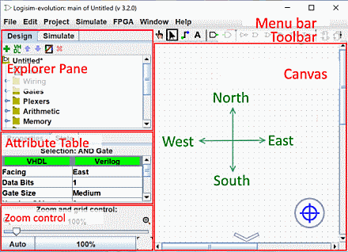

上一步: 初学者教程
第0步：整体概览
当您启动 Logisim-evolution时，您将看到类似于以下内容的窗口。 一些细节可能略有不同，因为您可能使用与我不同的系统。

Logisim-evolution由为三个部分构成， 分别为 资源管理器窗口, 属性表窗口, 画布窗口. 在这些部分上面是 菜单栏 和 工具栏

我们可以快速浏览一下资源管理器窗口和属性表窗口：我们不会在这一步的教程中讲解它们。同样，菜单栏功能也是很明显的。
剩下了工具栏和画布。 画布是您绘制电路的地方； 工具栏包含您将用来完成此操作的工具。
下一步: 第1步：添加门